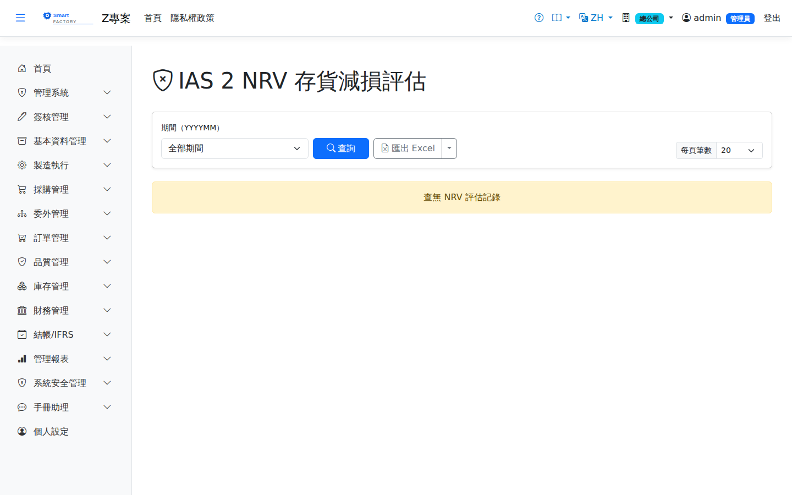

IAS 2 NRV 評估IAS 2 NRV Assessment
路由：/NrvAssessment | 存貨淨變現價值減損評估Route: /NrvAssessment | Inventory net realisable value impairment assessment
依 IAS 2 比較存貨成本與淨變現價值（NRV），成本高於 NRV 的品號算出跌價損失。分錄在月結作業步驟 9 開立（借 5240 存貨跌價損失／貸 1419 備抵存貨跌價損失），備抵調整到等於本期評估額，評估變小時迴轉差額。Compares inventory cost with net realisable value under IAS 2, and works out the loss on items whose cost exceeds NRV. The entry is posted at step 9 of Month-End Closing (Dr 5240 Inventory write-down loss / Cr 1419 Allowance for inventory valuation loss); the allowance is adjusted to equal this period's assessment, and if the assessment falls the difference is reversed.

NRV 淨變現價值評估畫面截圖（示意，實際欄位/資料依權限與查詢條件而異）NRV net realisable value assessment screenshot (illustrative; actual fields and data vary by permission and query criteria)
查詢Search
1
查詢列輸入條件後點「查詢」；欄位標題可點擊排序，清單下方有分頁導航。Enter your criteria on the query bar and click "Search"; column headers can be clicked to sort, and the paging controls sit below the list.
2
輸入評估期間與售價基礎後執行評估，逐筆檢視建議提列額。Enter the assessment period and the selling price basis, run the assessment and review the suggested provision line by line.
欄位說明Field reference
查詢條件Query criteria
| 條件Condition | 說明Guide |
|---|---|
| 期間（YYYYMM）Period (YYYYMM) | 要評估或查詢的會計期間The accounting period to assess or query |
| 欄位Field | 說明Guide |
|---|---|
| 期間Period | 本次評估歸屬的會計期間Accounting period this assessment belongs to |
| 品號Item | 受評估的料件；期末日往前 90 天內無銷售紀錄者不納入評估（無法推估售價）。客供倉的料屬客戶財產，不納入Item being assessed; items with no sales in the 90 days up to the period end are left out because no selling price can be estimated. Stock in customer-supplied warehouses belongs to the customer and is not assessed |
| 在庫量Qty on Hand | 期末日當時的在庫數量（期末之後的進出會倒推扣回，反關帳後重做上一期也不受影響）Quantity on hand at the period end (movements after the end date are backed out, so redoing a reopened period is not affected by later activity) |
| 帳面成本Carrying Cost | 期末當時的單位帳面成本：均價料取移動加權平均，先進先出料取成本層剩餘價值 ÷ 數量Unit carrying cost at the period end: the moving average for average-cost items, and the remaining cost-layer value ÷ quantity for FIFO items |
| NRV 單價NRV Price | 預期銷售單價：期末日往前 90 天銷貨發票明細的加權平均，換算為本幣、每庫存單位（Σ 本幣金額 ÷ Σ 庫存數量）Expected selling price: the weighted average over sales invoice lines in the 90 days up to the period end, in local currency per stock unit (Σ local amount ÷ Σ stock quantity) |
| 銷售費用Selling Cost | 估計銷售費用＝NRV 單價 × 銷售費用率（系統參數設定）Estimated selling cost = NRV unit price × selling cost rate (set as a system parameter) |
| NRV | 淨變現價值＝NRV 單價 － 銷售費用Net realisable value = NRV unit price − selling cost |
| 減損損失Impairment Loss | max(0, (帳面成本 － NRV) × 在庫量)。帳面成本未高於 NRV 時為 0，不提列max(0, (book cost − NRV) × quantity on hand). It is 0 when the book cost does not exceed NRV, and nothing is provided for |